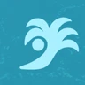

Badauê
1/7
BadauêComo a vitória-régia virou um dos maiores símbolos da Amazônia?Enaltecendo o gingado brasileiro · www.alabadaue.com
Novo layout para um carrossel de Instagram sobre a vitória-régia, inspirado na mesma temática da publicação original, com motion aplicado na capa.

BadauêBadauêComo a vitória-régia virou um dos maiores símbolos da Amazônia?Enaltecendo o gingado brasileiro · www.alabadaue.com
Proposta desenvolvida exclusivamente para avaliação no processo seletivo da Badauê. Os textos seguem a copy fornecida no desafio.